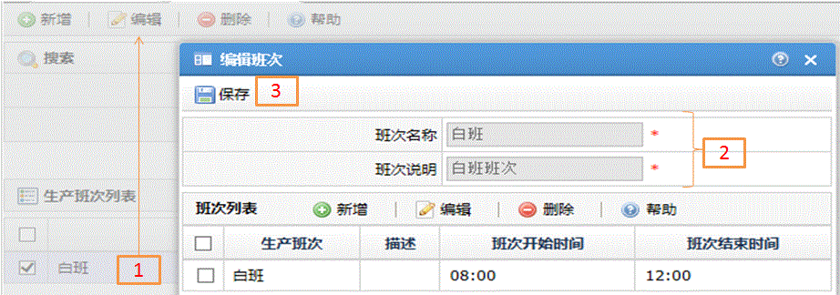
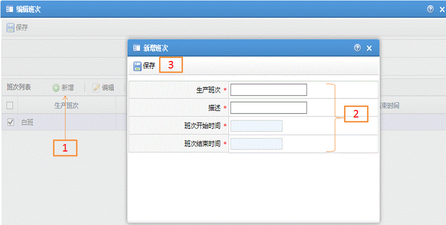
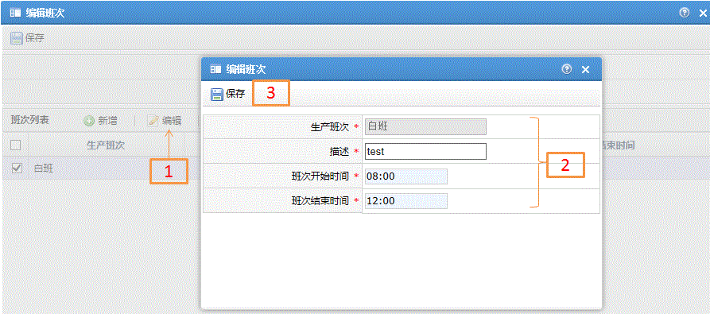
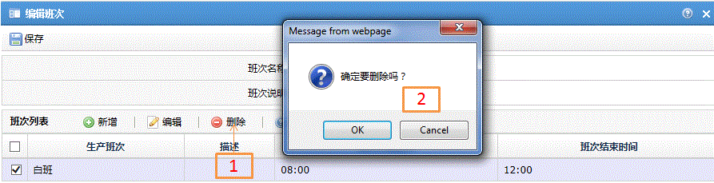

编辑班次
字段描述
字段名
描述
班别名称
班别的命名
班别说明
班别的解释说明
生产班次
实际生产的班次
描述
生产班次的说明
班次开始时间
班次开始时间点，范围和格式必须是00:00到23:59
班次结束时间
班次结束时间点，范围和格式必须是00:00到23:59
功能描述
修改存在的班别内容，可对其中的班次进行新增、编辑、删除操作
保存
1.主页中选中记录后单击编辑按钮；
2.修改班别相关信息；
3.单击保存按钮

新增
1.班别页面中单击新增按钮；
2.输入班次相关信息，时间范围和格式必须是00:00~23:59；
3.最后单击保存

编辑
1.班别页面中选中记录后单击编辑按钮；
2.修改班次相关信息，时间范围和格式必须是00:00~23:59；
3.最后单击保存

删除
1.在列表中选中记录后单击删除按钮；
2.在弹出的对话框中选择Ok或Cancel。
